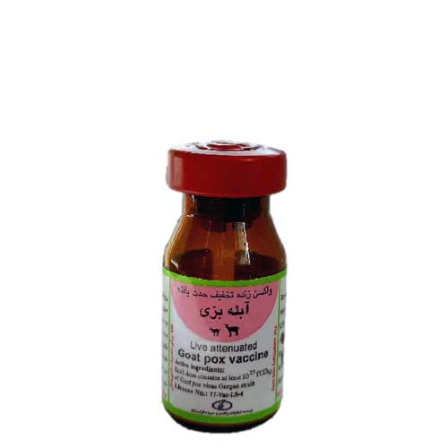

واکسن زنده تخفیف حدت یافته آبله بزی موسسه رازی
📝شکل و نوع واکسن:
واکسن زنده تخفیف حدت یافته، به صورت لیوفیلیزه، تزریقی
📝ترکیب واکسن:
هر دز حاوی حداقل 102/5 TCID50 ویروس آبله بزی سویه گرگان
لاکتالبومین به عنوان پایدار کننده
📝موارد مصرف:
به منظور ایجاد ایمنی فعال علیه بیماری آبله در بز و بزغاله
📝دز، روش مصرف و راه تجویز:
با رعایت شرایط آسپتیک، مقدار 5 میلی لیتر از بطری حلال (سرم فیزیولوژی 100 میلی لیتری) را توسط سرنگ کشیده و وارد ویال واکسن نمایید.
با هم زدن ویال، محتوای آن را کاملاً حل کنید.
سپس محلول حاصل را توسط سرنگ وارد بطری حلال کرده و آن را چندین بار سر و ته نمایید تا کاملاً یکنواخت شود. از محلول به دست آمده به هر بز/بزغاله، 0/5 میلی لیتر از راه زیر جلدی تزریق شود.
📝برنامه و زمان مناسب واکسیناسیون:
در شرایط عادی و در دام هایی که از مادر ایمن متولد شده اند، تجویز واکسن از سن 3 ماهگی آغاز و دز یاد آور به طور سالیانه تجویز شود.
📝موارد منع مصرف:
از تجویز این واکسن در ماه آخر آبستنی خودداری شود.
از واکسیناسیون دام های بیمار و ضعیف خودداری شود.
پس از انقضای تاریخ مصرف، از مصرف واکسن خودداری شود.
از واکسیناسیون دام ها در فاصله زمانی 3 هفته مانده به کشتار خودداری شود.
📝عوارض جانبی:
در صورت تزریق صحیح واکسن هیچ گونه واکنش موضعی یا عمومی در دام دیده نمی شود.
در صورتی که واکسن بین جلدی تزریق گردد ممکن است تورمی به بزرگی 2-1 سانتی متر در محل تزریق ایجاد شود که این واکنش بی ضرر بوده، به زودی برطرف می شود.
📝توصیه ها و احتیاط های لازم:
واکسن از شبکه توزیع رسمی اخذ شود.
واکسن طبق برنامه سازمان دامپزشکی کشور تجویز شود.
به هنگام مصرف واکسن، زنجیره سرد و شرایط آسپتیک رعایت شود.
حلال مورد استفاده باید خنک باشد.
تمامی دام های سالم موجود در گله، به طور هم زمان واکسینه شوند.
حداقل 2 ساعت قبل و یک روز پس از مایه کوبی، به دام ها استراحت داده و از جابه جایی آن ها خودداری شود.
به منظور حفظ یکنواختی، پس از تهیه محلول و حین مصرف، ویال حاوی واکسن چندین بار سر و ته شود.
تمام محتوای واکسن پس از آنکه به صورت مایع در آمد باید در همان روز و بلافاصله در مدت زمان حداکثر 2 ساعت استفاده و از مصرف باقی مانده آن خودداری شود.
به هنگام کشیدن واکسن به داخل سرنگ، همچنین در حین تزریقات، احتیاط کامل به عمل آید که به سر و صورت پاشیده نشود. در غیر این صورت، محل آلودگی بلافاصله با آب و صابون و یا مواد ضدعفونی کننده شستشو داده شود.
سویه به کار رفته در این واکسن در انسان ایجاد بیماری نمی نماید. با این حال در صورت تزریق به دست، به پزشک مراجعه شود.
ویال های خالی واکسن به طور صحیح ضدعفونی ( اتوکلاو، سوزاندن، استفاده از مواد شیمیایی مناسب) و سپس دفتن بهداشتی شوند.
📝شرایط حمل و نقل و نحوه نگهداری:
دور از نور خورشید و در دمای 4-2 درجه سانتی گراد حمل و نگهداری شود. در این شرایط، واکسن تا 8 ماه پس از تاریخ تولید (براساس تاریخ مندرج بر روی برچسب) قابل مصرف خواهد بود.
📝بسته بندی:
این واکسن در جعبه های 10 ویالی و هر ویال حاوی 200 دز عرضه می شود.